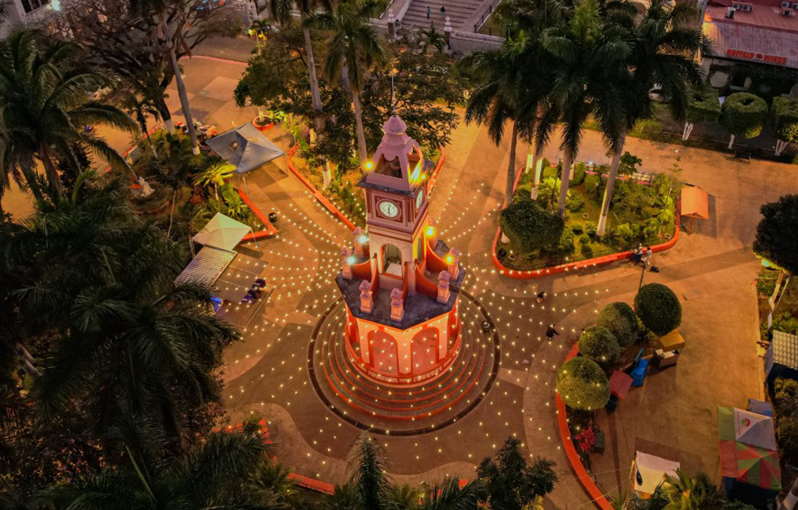
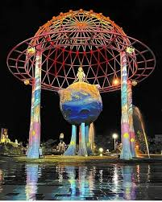
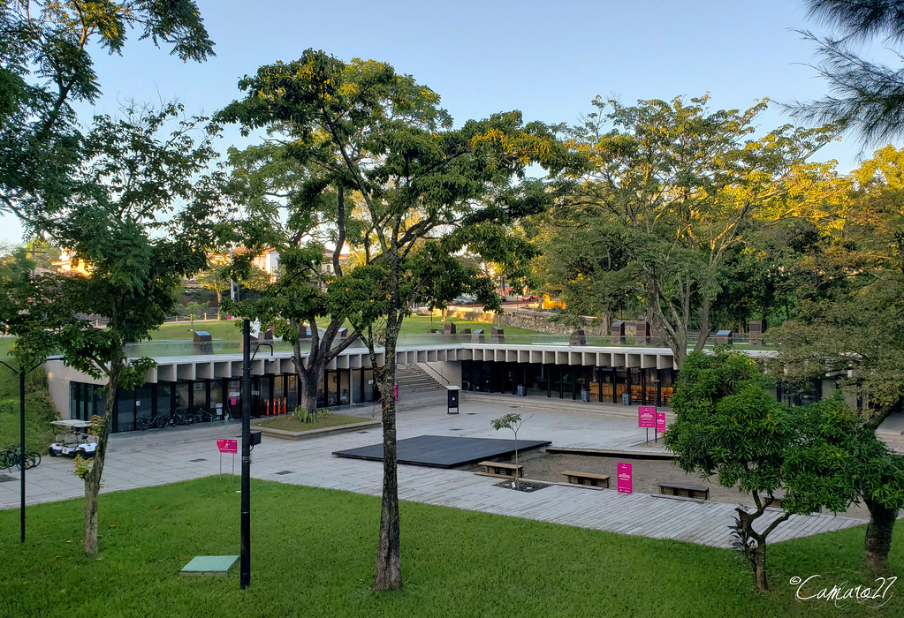

Ciudades y Pueblos vivos
Descubre la historia de los edificios mas emblematicos de El Salvador y descubre la magía de la ciudad y los pueblos vivos
Descubre cada citio del país
Ahuachapan | 2h
ERodeado de arquitectura colonial y la iglesia principal. Destaca por su ambiente tranquilo y tradicional.

Santa Tecla | 30 min SS
Parque temático inspirado en el libro El Principito.

San Salvador | 20 min SS
Uno de los parques urbanos más importantes de la capital.
Mañana y tarde (4:00 pm – 8:00 pm). El Centro Histórico de :contentReference[oaicite:0]{index=0} luce más atractivo de noche por su iluminación.
Lugares como el :contentReference[oaicite:1]{index=1} y el centro histórico son de fácil acceso. Para :contentReference[oaicite:2]{index=2} y :contentReference[oaicite:3]{index=3} se recomienda vehículo.
Las zonas turísticas cuentan con presencia policial. Se recomienda cuidar pertenencias y visitar áreas concurridas como el :contentReference[oaicite:4]{index=4} y parques centrales.
Ropa cómoda, agua, protector solar y celular con batería. Ideal para recorrer sitios como Villa Bethel y parques urbanos.
Se puede usar transporte público o apps. Para destinos lejanos como Santa Ana y Ahuachapán se recomienda vehículo propio o excursión.
Fotografía, recorridos culturales, visitas a iglesias y parques, y disfrutar de la gastronomía local en cada destino.